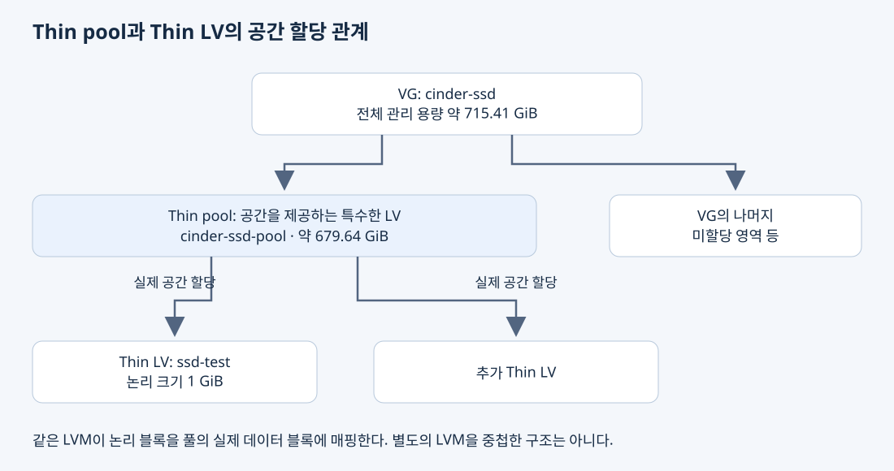

OpenStack Cinder의 LVM 백엔드를 이해하려면 블록 장치를 만드는 기능과 그 장치의 공간을 할당하는 기능을 구분해야 한다. loop는 파일을 블록 장치로 연결하고, LVM은 제공받은 블록 장치의 공간을 논리 볼륨으로 관리한다. Cinder는 LVM 드라이버를 통해 그 볼륨의 생명주기를 관리한다.
파일을 블록 장치로 연결하는 loop
블록 장치 인터페이스에서는 저장 공간의 위치를 지정해 데이터를 읽고 쓴다. 파일 이름과 디렉터리의 의미는 파일시스템이 제공한다. 일반 파일도 위치를 지정해 읽을 수 있지만, 블록 장치는 LVM이나 파일시스템 같은 계층이 저장 장치로 다룰 수 있는 별도의 인터페이스를 제공한다.
loop는 준비된 파일을 /dev/loopN 같은 블록 장치로 연결한다. loop에 전달된 읽기·쓰기 요청은 원본 파일의 해당 위치로 이어진다. 파일을 복사하거나 물리 공간을 새로 만드는 기능은 아니다.
운영체제가 SSD의 파일시스템을 사용 중인 환경에서는 그 파일시스템 안에 큰 파일을 만들고 loop로 연결해 LVM에 제공할 수 있다. 원래 SSD를 다시 PV로 초기화하지 않고 파일 단위로 실습용 저장 공간을 마련하는 방식이다. 파일의 논리 크기와 실제 할당된 물리 공간은 파일 생성 방법에 따라 다를 수 있다.
예시의 기존 백엔드에는 100 GiB /dev/loop14가 cinder-volumes VG의 PV로 등록돼 있었다. backing file의 정확한 경로와 물리 할당량은 이 문서의 확인 범위에 포함하지 않는다.
LVM은 파일을 만들어 loop로 감싸는 프로그램이 아니다
전용 SSD를 LVM에 직접 제공하면 loop가 필요 없다.
| 구성 | 저장 공간의 기반 |
|---|---|
기존 cinder-volumes |
파일 → loop 블록 장치 → PV → VG |
새 cinder-ssd |
SSD 블록 장치 두 개 → PV 두 개 → VG |
LVM의 VG는 PV의 구성과 할당 정보를 관리한다. 일반 파일이나 마운트할 파일시스템이 아니다. LV를 생성하고 활성화하면 Linux의 device-mapper가 논리 주소를 기반 장치의 주소로 연결하는 블록 장치를 제공한다.
따라서 loop 하나 위에 여러 LV를 만들면 각각의 요청이 매핑을 거쳐 같은 backing file의 서로 다른 영역으로 이어질 수 있다. Thin LV의 경우에는 Thin pool의 추가 매핑도 거친다. 새 SSD 백엔드는 마지막 기반이 파일이 아니라 SSD다.
VG 안에 Thin pool이 따로 필요한 이유
일반적인 LV는 설정된 크기에 해당하는 VG 공간을 할당받는다. Thin provisioning은 LV의 논리 크기와 실제 데이터가 소비하는 공간을 구분한다.
Thin pool도 LVM이 관리하는 특수한 LV다. 내부적으로 데이터용 LV와 매핑 메타데이터용 LV를 사용해 저장 공간을 관리한다. 개별 Thin LV는 이 풀을 공유하면서 쓰기가 필요한 논리 영역에 실제 블록을 할당받는다.
| 구분 | 역할 | 이 구성의 예 |
|---|---|---|
| Thin pool | 여러 Thin LV에 실제 저장 공간을 제공하는 특수한 LV | cinder-ssd-pool |
| Thin LV | 풀에서 공간을 할당받는 개별 논리 디스크 | ssd-test에 대응하는 volume-… |
“LV 안에 또 LV를 만든다”는 표현은 이 공간 할당 관계를 추상적으로 나타내는 말로는 이해할 수 있다. 다만 폴더처럼 포함되는 구조이거나, 일반 LV 위에 다시 PV와 VG를 만들어 별도의 LVM 계층을 구성한 것은 아니다. 같은 LVM의 Thin provisioning 계층이 각 Thin LV의 논리 블록을 Thin pool의 실제 데이터 블록에 매핑한다.

VG를 용량 풀이라고 부를 수 있지만, thin pool은 LVM에서 구체적인 의미를 가진 구성이다. VG 자체의 타입을 thin으로 바꾼 것이 아니다.
Thin pool은 VG 생성 후 Cinder가 만들었다
관리자가 직접 실행한 vgcreate cinder-ssd ...는 두 PV를 VG에 묶는 명령이었다. 이 시점의 출력은 #LV=0이므로 Thin pool도 없었다.
이후 Cinder 백엔드에 다음 설정을 적용했다.
[lvm-ssd]
volume_group = cinder-ssd
lvm_type = thin
이 설정을 읽은 Cinder의 LVM 드라이버가 백엔드를 초기화하면서, 필요한 Thin pool이 없으면 LVM을 통해 생성한다. 이 구성에서 생성된 이름은 cinder-ssd-pool이다. Thin pool은 LVM의 저장소 구조이며, 그 생성을 요청한 관리 주체가 Cinder라는 뜻이다.
| 시점 | 작업 주체와 동작 | 생기는 것 |
|---|---|---|
| SSD 공간 준비 | 관리자가 vgcreate 실행 |
cinder-ssd VG |
| Thin 백엔드 설정 적용 | Cinder LVM 드라이버가 LVM을 통해 생성 | cinder-ssd-pool Thin pool |
| Horizon에서 볼륨 생성 | Cinder LVM 드라이버가 해당 풀에 볼륨 생성 | 개별 Thin LV |
볼륨 타입 ssd를 만든 것이 Thin pool을 생성한 것도 아니다. 볼륨 타입은 이미 준비된 백엔드를 선택할 조건을 제공한다.
Cinder가 만든 Thin pool을 읽는 방법
아래 명령은 VG 안의 LV와 각 LV가 사용하는 Thin pool을 보여 준다.
lvs -o lv_name,vg_name,lv_size,pool_lv cinder-ssd
볼륨 생성 후 출력은 다음과 같았다.
LV VG LSize Pool
cinder-ssd-pool cinder-ssd 679.64g
volume-edd1855b-558c-407e-a3eb-5cdd9c15214b cinder-ssd 1.00g cinder-ssd-pool
VG 열은 소속 볼륨 그룹이다. Pool 열은 pool_lv를 요청한 결과로, 그 LV가 어느 Thin pool을 사용하는지 나타낸다. Thin pool 자체 행의 Pool이 비어 있는 것은 다른 Thin pool에 속한 Thin LV가 아니기 때문이다.
첫 행의 cinder-ssd-pool이 특수한 LV인 Thin pool이고, 두 번째 행이 그 공간을 할당받는 Thin LV다. 둘 다 lvs에 표시되지만 위 출력에는 종류를 구분하는 열이 없다. 다음처럼 segtype을 추가하면 풀은 thin-pool, 개별 볼륨은 thin으로 구분할 수 있다.
lvs -o lv_name,vg_name,lv_size,segtype,pool_lv cinder-ssd
초기 VG 용량 715.41 GiB에 비해 Cinder가 보고한 풀 용량은 약 679.64 GiB였다. 이 초기화 결과는 약 95%에 해당한다. 차이 전체를 이미 사용된 메타데이터라고 해석하면 안 된다. 실제 할당은 다음 명령으로 조회할 수 있다.
vgs cinder-ssd
lvs -a -o lv_name,vg_name,lv_size,segtype,pool_lv,data_percent,metadata_percent,devices cinder-ssd
논리 용량은 물리 용량보다 커질 수 있다
Thin pool이 100 GiB여도 100 GiB Thin LV 두 개를 선언하는 구성은 가능하다. 두 LV의 논리 용량 합계가 200 GiB라고 해서 물리 데이터 200 GiB를 저장할 수 있는 것은 아니다. LVM에서 가능하더라도 Cinder를 통한 생성은 스케줄링 설정·프로젝트 쿼터·남은 용량 조건 등을 함께 만족해야 한다.
예시 백엔드는 max_over_subscription_ratio='20.0'을 보고했다. 이는 스케줄러의 Thin provisioning 용량 판단에 쓰이는 설정이며, SSD의 물리 용량이 20배가 되거나 그만큼 안전하게 써도 된다는 뜻이 아니다.
VM 안의 파일시스템은 자기 디스크의 논리 용량을 보고 빈 공간을 계산한다. 따라서 게스트에 빈 공간이 보여도 여러 볼륨이 공유하는 Thin pool이 먼저 가득 찰 수 있다. 새로운 블록 할당에 필요한 데이터 공간이나 메타데이터 공간이 부족하면 쓰기가 대기하거나 오류가 발생할 수 있고, 게스트의 파일시스템과 애플리케이션에도 영향을 준다.
Data%와 Meta%는 각각 풀 데이터와 메타데이터의 사용 상태를 확인하는 지표다. VFree는 VG의 미할당 용량이므로 풀 내부의 남은 공간과 구분한다.
볼륨 연결과 파일시스템 마운트는 별도 단계다
Cinder의 데이터 볼륨은 VM에 블록 장치로 제공할 수 있다. 호스트가 그 볼륨을 일반 디렉터리에 마운트해야 VM에 줄 수 있는 것은 아니다. VM 내부에서 파일로 사용하려면 게스트가 디스크를 인식하고, 필요에 따라 파일시스템을 준비해 마운트해야 한다.
물리 블록 장치든 가상 블록 장치든 파일시스템을 만든 뒤 마운트하는 기본 원리는 같다. 다만 장치 이름과 데이터의 실제 저장 위치는 다르다. 현재 기록은 VM 연결 단계까지이며 게스트 마운트는 아직 수행 결과가 없다.